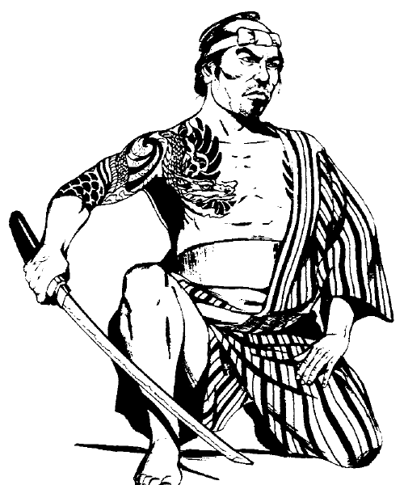

武器等效与数值

许多武器在表中以常见英文名称列出，但这些武器在不同地区有许多不同称呼。下表列出其中一些名称。不同地区的武器外形可能略有差异，不过这不会影响武器的一般功能。
表 48：武器异名
| 武器 | 其他名称 |
|---|---|
| 战斧 | Fu、liu、chi'ang、chi、chin、yueh、chien、ch'i fu、i huang、masakari、ono |
| 手斧 | Piso、tonkeng、batak、kapak |
| bo 棍 | Rokushakubo、staff |
| 链 | Manriki-gusari、rante |
| 匕首 | Tanto、do-su、kozuka、aikuchi |
| 戟 | Ko、ch'i chi、pi chi、bisento |
| 标枪 | Mau |
| jo 棍 | Muton、arnis |
| 轻骑枪 | Hsaio、shuo |
| 钉头锤 | Suan Tao Fung |
| 长矛 | Mao、lembing |
| 矛 | Yari |
| 长剑 | Tau-kien |
| 短剑 | Kris |
| 双手剑 | No-dachi |
| 三叉戟 | Magari yari、tiger lance |
表 49：各类武器的重量与伤害
重量为约数；表中伤害分别针对体型 S 或 M 的生物、以及体型 L 的生物。末栏字母对应原书下页脚注。原书以粗体标出的武器需要双手使用。
| 武器 | 重量 | 伤害（S/M） | 伤害（L） | 脚注 |
|---|---|---|---|---|
| 破甲箭 | 2 | 2–5 | 1–4 | |
| 蛙叉箭 | 2 | 1–6 | 1–3 | |
| 鸣哨箭 | 2 | 1–2 | 1–2 | |
| 叶头箭 | 2 | 1–8 | 1–6 | |
| 普通箭 | 2 | 1–6 | 1–6 | |
| 战斧 | 75 | 1–8 | 1–8 | h |
| 手斧或投斧 | 50 | 1–6 | 1–4 | h |
| bo 棍 | 40 | 1–6 | 1–4 | f |
| 木刀 boku-toh | 30 | 1–4 | 1–2 | |
| 链 | 30 | 2–5 | 1–4 | f、g、h |
| chijiriki | 60 | 1–6 | 1–8 | g |
| 筷子 | 1 | 1–3 | 1–2 | |
| 棍棒 | 30 | 1–6 | 1–3 | |
| 匕首 | 10 | 1–4 | 1–3 | |
| 吹管短矢 | 1 | 1–2 | 1 | |
| 投掷飞镖 | 5 | 1–3 | 1–2 | |
| 钩棒 fang | 30 | 1–6 | 1–4 | e |
| 铁扇 gunsen | 10 | 1–3 | 1–2 | f |
| 戟 | 175 | 1–10 | 1–12 | h |
| 标枪* | 20 | 1–6 | 1–6 | |
| 十手 jitte | 15 | 1–4 | 1–2 | e |
| jo 棍 | 15 | 1–6 | 1–3 | f |
| 镰 kama | 20 | 1–6 | 1–4 | |
| 武士刀 katana | 60 | 1–10 | 1–12 | |
| 链鞭 kau sin ke | 40 | 1–8 | 1–6 | e |
| 抓钩 kawanga | 10 | 1–3 | 1–2 | d、g |
| 铁管 kiseru | 5 | 1–4 | 1–2 | f |
| 攀爬耙 kumade | 15 | 1–4 | 1–3 | d |
| 镰锁 kusari-gama | 30 | 1–6 | 1–4 | d、g |
| 双刃绳 kyoketsu-shogi | 10 | 1–4 | 1–4 | d、g |
| 薙杖 lajatang | 80 | 1–10 | 1–10 | f |
| 轻骑枪 | 50 | 1–6 | 1–8 | a |
| 套索 | 20 | — | — | |
| 钉头锤 | 100 | 2–7 | 1–6 | |
| 捕人器 | 80 | 1–2 | 1–2 | |
| 骑手长刀 nagimaki | 60 | 1–6 | 1–8 | b |
| 步兵长刀 naginata* | 100 | 1–8 | 1–10 | b |
| 针 | 1 | 每根针 1 点伤害 | — | d |
| 攀爬爪 nekode | 5 | 1–4 | 1–3 | d |
| 忍者刀 | 50 | 1–8 | 1–6 | d |
| 双节棍 nunchaku | 30 | 1–6 | 1–6 | e |
| 砍刀 parang | 50 | 1–8 | 1–8 | |
| 重弩矢 | 2 | 2–5 | 2–7 | |
| 轻弩矢 | 1 | 1–4 | 1–4 | |
| 叉棍 sai | 20 | 1–4 | 1–2 | e |
| 三股钩 sang kauw | 100 | 1–8 | 1–6 | e |
| 投掷武器 shaken | 5 | 1–4 | 1–4 | d |
| 手里剑（针形） | 1 | 1–4 | 1–3 | d |
| 手里剑（大型星形） | 2 | 1–6 | 1–4 | d |
| 手里剑（小型星形） | 1 | 1–4 | 1–4 | d |
| 金属箭 siangkam | 5 | 2–5 | 1–4 | e |
| 投石索／弹丸弓弹丸 | 2 | 2–5 | 2–7 | |
| 投石索石块 | 1 | 1–4 | 1–4 | |
| 杖投石索弹丸 | 5 | 2–8 | 3–9 | |
| 杖投石索石块 | 4 | 1–8 | 2–8 | |
| 袖缠 sode-garami | 50 | 1–4 | 1–3 | g |
| 矛* | 40–60 | 1–6 | 1–8 | b、f |
| 宽剑 | 75 | 2–8 | 2–7 | h |
| 长剑 | 60 | 1–8 | 1–12 | h |
| 短剑 | 35 | 1–6 | 1–8 | c、h |
| 双手剑 | 150–250 | 1–10 | 3–18 | h |
| 铁菱 tetsu-bishi | 3 | 1–4 | 1–4 | d |
| 铁棒 tetsubo | 75 | 1–8 | 1–8 | f |
| 三节棍 | 50 | 1–6 | 1–4 | e |
| 三叉戟 | 50 | 2–7 | 3–12 | h |
| Tui-fa（Tonfa） | 15 | 1–6 | 1–4 | e |
| 小标枪 uchi-ne | 5 | 1–4 | 1–4 | |
| 胁差 wakizashi | 30 | 1–8 | 1–8 | |
| 鞭 | 25–35 | 1–2 | 1 | g |